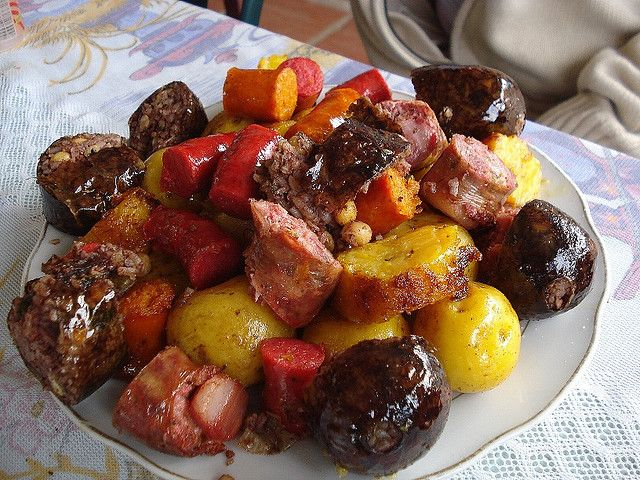

Fritanga
Fritanga is a fusion between our indigenous roots and the new traditions acquired in the colony. It stands as the precursor of fast foods with all its history and tradition. It is a dish made up of a variety of pork-based products, such as red sausage, sausage, short ribs and stuffed meat, accompanied by Creole potatoes, ripe bananas and chili peppers.
Preparation time
- Total: Approximately 30 minutes.
- Preparation: 10 minutes.
- Cooking: 20 minutes.
Instructions
- Marinate the beef and ribs with salt and pepper.
- Heat a large frying pan over medium heat with a splash of oil and fry the ribs until the meat becomes soft.
- Add the minced beef into pieces the same size as the rib.
- When the meat and rib are ready, remove from the heat and set aside.
- In the same pan add the chopped chorizo and blood sausage and cook for about 10 minutes or until they are golden and well cooked.
- Also remove from heat.
- In the same pan, with the oil that will have remained from the previous cooking, add the potatoes and the chopped cassava and fry until both are tender inside.
- Now simply put all the ingredients in the pan to give them a touch of heat and that's it.
- Serve on a large tray with chopped tomatoes on the sides as decoration.
- With this you already have a delicious Colombian fritanga ready.